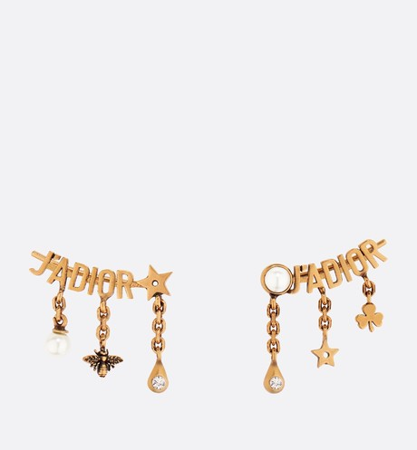
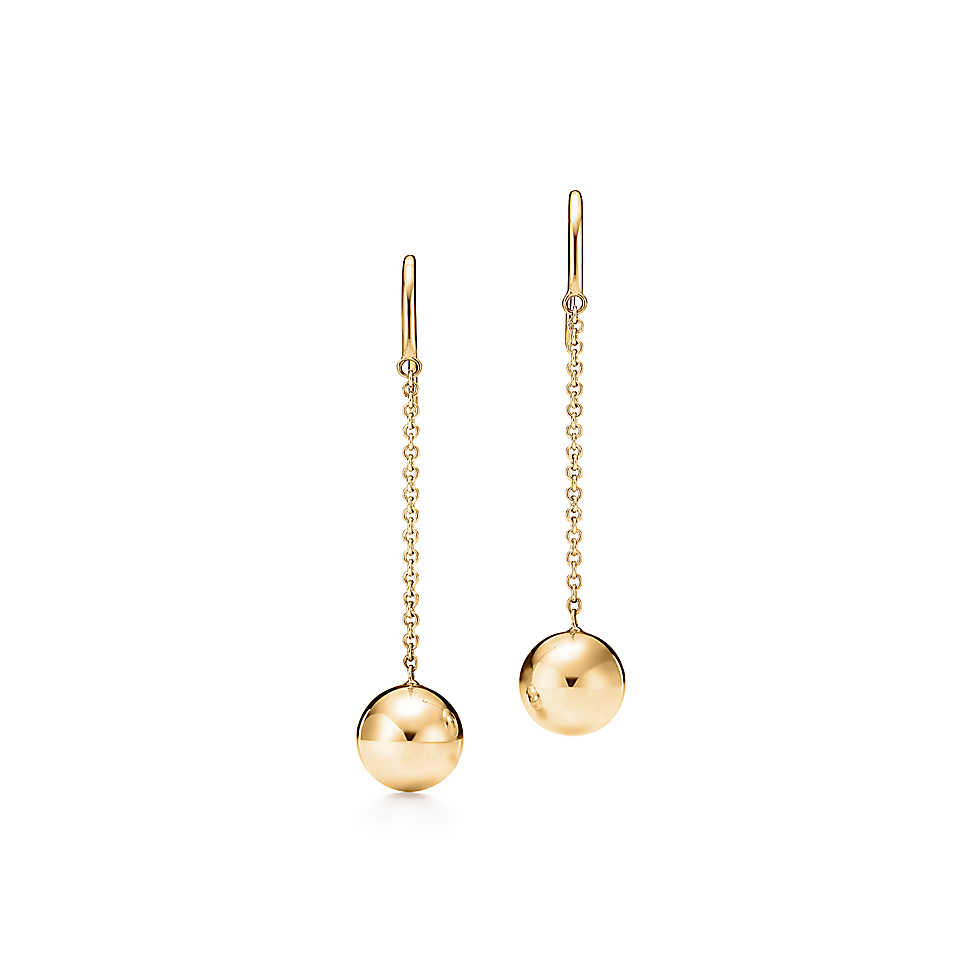

一般珠宝护理
时光流逝，珍贵的珠宝值得一生珍藏，世代传承。而适当的护理将保持其光泽。 灰尘、污染或者长期频繁佩戴都可能使宝石的光芒黯淡。黄金、铂金和纯银首饰的表面也可能失去光泽。而抓托及锁扣的年久失修可能导致宝石乃至整件珠宝损毁遗失。
通常珠宝需要每年进行专业的清洁。我们建议您把珠宝送回我们的服务部门进行专业护理。我们的工作人员拥有丰富的珠宝护理专业技能和实践经验，从宝石的 清洁、珍珠的重串以及锁扣和耳环的维修无一不精。


纯银保养
纯银保养首要规则
纯银很容易失去光泽，尤其是暴露于含盐的空气和其他含硫的物质，如橡胶或 某些纸类。经常佩戴的纯银首饰比较少需要保养。所以蒂芙尼强烈建议您可每日 佩戴纯银首饰。
纯银清洁
蒂芙尼建议用温和的洗涤剂在温水中手洗银器。因为许多食物的酸性物质与空气 拥有腐蚀能力，我们建议在使用后立即清洗您的银器。银器，尤其是刀，不应 在水中浸泡过久。为了避免污渍，请于清洗后尽快擦干。
纯银抛光
可使用蒂芙尼银制珠宝清洁剂或其他优质品牌来提亮光泽或擦去指纹。应当避免 接触化学品。不建议电解清洗（铝箔，盐和小苏打）。
首先将珠宝清洁剂挤取在软布或海绵上，轻轻地按直线连续纵向擦拭。再用肥皂水清洗，请务必清洗干净所有珠宝清洁剂，最后以温水冲洗后 用软布仔细地擦干。
特别注意
“氧化“抛光是有意将银器中的部分装饰缝隙变黑，使细节更为清晰，明显。过度的清洁与抛光会将使其擦除。
纯银收藏
清洗和抛光后，纯银必须保持干燥，并妥善收藏保存。蒂芙尼蓝色绒布袋 将保护纯银免受磨损，并一定程度地预防变色。将纯银制品储藏于绒布中时，应确保其空间必须为完全干燥。如身处潮湿的 环境，请在存放空间内加入一小袋晶质的干燥剂。